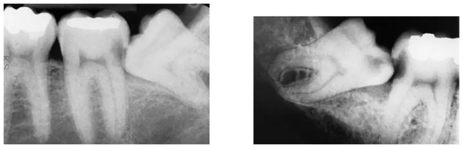
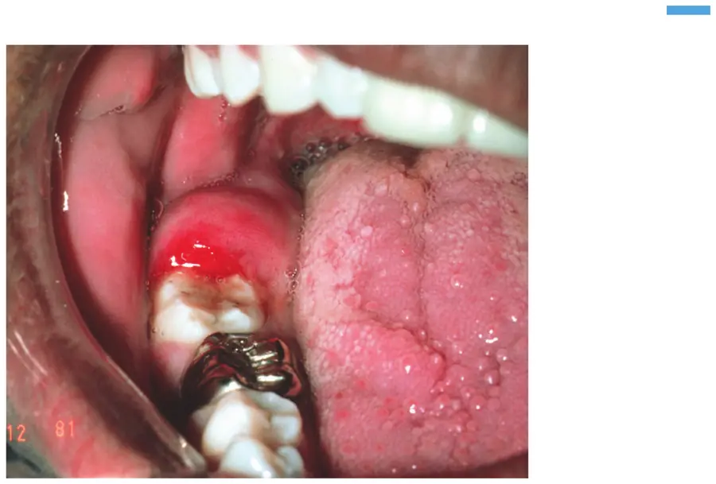

نسخه استخراجشده؛ ترجمه یا تأیید علمی انجام نشده است. وضعیت: captured
دندانهای رویشیافتهی مجاور دندان نهفته مستعد بیماری پریودنتالاند. صرفِ حضور مولر سوم نهفتهی پایین، مقدار استخوان سطح دیستال مولر دوم مجاور را کم میکند.

زنجیرهی رخداد: سختترین سطح دندانی برای تمیز نگه داشتن، سطح دیستال آخرین دندان قوس است، پس بیماران معمولاً التهاب لثه با مهاجرت آپیکالی اتصال لثهای در سطح دیستال مولر دوم پیدا میکنند، و حتی با ژنژیویت خفیف، باکتریهای عامل به بخش بزرگی از سطح ریشه دسترسی پیدا میکنند و پریودنتیت زود شکل میگیرد.
یافتهی بالینی شاخص: بیماران با مولر سوم نهفتهی پایین اغلب پاکت پریودنتال عمیق در سطح دیستال مولر دوم دارند، در حالی که عمق سالکوس در بقیهی دهانشان طبیعی است.
و در ماگزیلا وضع بدتر است. با گسترش آپیکالی پاکت پریودنتال، فورکیشن دیستال مولر دوم ماگزیلا درگیر میشود — و این نسبتاً زود اتفاق میافتد، پس پیشرفت بیماری سریعتر و شدیدتر میشود. درمان بیماری پریودنتال موضعی اطراف مولر دوم ماگزیلا هم به دلیل درگیری فورکیشن دیستال سختتر است.
فایدهی برداشتن زودهنگام: پیشگیری از بیماری پریودنتال، و بالا رفتن احتمال التیام استخوانی و پر شدن مطلوب استخوان در ناحیهای که قبلاً تاج مولر سوم اشغالش کرده بود.
پوسیدگی. وقتی مولر سوم نهفته یا نیمهنهفته است، باکتریها و سایر عوامل پوسیدگی معمولاً هم به سطح دیستال مولر دوم و هم به تاج خود مولر سوم نهفته دسترسی پیدا میکنند.
و یک نکتهی مهم: حتی در موقعیتهایی که هیچ ارتباط آشکاری میان دهان و مولر سوم نهفته دیده نمیشود، ممکن است ارتباط کافی برای شروع پوسیدگی وجود داشته باشد.
پریکرونیت عفونت بافت نرم اطراف تاج دندان نیمهنهفته است و معمولاً از فلور طبیعی دهان ناشی میشود. در بیشتر بیماران تعادل ظریفی میان باکتری و دفاع میزبان برقرار است، ولی حتی دفاع طبیعی هم نمیتواند باکتریها را حذف کند.

پس همین بس که تعادل کمی به هم بخورد: اگر دفاع میزبان مختل شود — بیماریهای جزئی مثل آنفلوانزا یا عفونت تنفسی فوقانی، یا داروهای سرکوبکنندهی ایمنی — عفونت رخ میدهد. پس دندانی که مدتها بدون عفونت بوده، با یک کاهش خفیف و گذرای دفاع میزبان دچار پریکرونیت میشود، حتی اگر بیمار هیچ مشکل ایمنی نداشته باشد.
دو علت شایع دیگر:
عامل میکروبی: استرپتوکوکها و طیف وسیعی از باکتریهای بیهوازی — همان باکتریهای معمول ساکن سالکوس لثهای.
درمان اولیه: دبریدمان مکانیکی پاکت بزرگ زیر اپرکولوم با شستوشوی آب اکسیژنه. آب اکسیژنه دو کار میکند: با عمل کفکنندهاش باکتری را مکانیکی میبرد، و با آزاد کردن اکسیژن در محیط معمولاً بیهوازی پاکت، تعداد بیهوازیها را کم میکند. شستوشوهای دیگر مثل کلرهگزیدین یا یدوفورها هم بار باکتریایی را کم میکنند. حتی سالین، اگر مرتب و با فشار با سرنگ داده شود، تعداد باکتری را کم و دبری غذا را میشوید.
سه درجهی شدت و درمان متناظرشان:
و مرز ارجاع فوری: پریکرونیت میتواند به عفونتهای جدی فضاهای فاشیال بینجامد، چون عفونت در عقب دهان شروع میشود و میتواند بهسرعت به فضاهای راموس مندیبل و گردن جانبی منتشر شود. اگر بیمار تریسموس با ناتوانی باز کردن دهان بیش از ۲۰ میلیمتر، دمای بالای ۱۰۱ درجهی فارنهایت (حدود ۳۸٫۳ درجهی سانتیگراد)، تورم صورت، درد و بیحالی داشته باشد، باید به جراح دهان و فک و صورت ارجاع شود که احتمالاً بیمار را برای آنتیبیوتیک تزریقی، پایش دقیق و کشیدن جراحی بستری میکند.
دو نکتهی تعیینکننده در زمانبندی: بیماری که یک اپیزود پریکرونیت داشته، بهاحتمال زیاد اپیزودهای بعدی خواهد داشت مگر مولر سوم پایین برداشته شود و باید بداند دندان در اولین فرصت ممکن باید برداشته شود. ولی مولر سوم پایین نباید تا فروکش کامل علائم و نشانههای پریکرونیت برداشته شود: بروز دراسکت و عفونت پس از عمل در صورت کشیدن حین عفونت فعال بافت نرم بالا میرود، و خونریزی بیشتر و التیام کندتر هم رخ میدهد.
و دربارهی اپرکولکتومی: برداشتن بافت نرم اطراف بهعنوان روش پیشگیری از پریکرونیت بدون برداشتن دندان توصیه شده، ولی دردناک و معمولاً بیاثر است: بافت نرم اضافی دوباره عود میکند چون روی دندان نهفته میافتد و اپرکولوم دوباره رشد میکند، و پاکت لثهای سطح دیستال هم پس از اپرکولکتومی عمیق باقی میماند. اکثریت قاطع موارد پریکرونیت تنها با کشیدن دندان قابل پیشگیریاند. پیشگیری واقعی: برداشتن مولر سوم نهفته پیش از آنکه مخاط دهان را سوراخ کند و دیده شود.